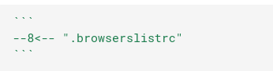

Setup mkdocs¶
Pip¶
mkdocs-material
mkdocs-include-markdown-plugin
#mkdocs
#mkdocs-material-extensions
Docs folder struct¶
└── docs
├── img
│ └── course.png
Basic mkdocs config¶
site_name: ROS Coockbook
theme:
name: material
nav:
- Home: index.md
- Launch: basics.md
- Gazebo:
- Spwan: wines.md
- Camera: wine.md
- LIDAR: tastings.md
- ROS2: addresses.md
- Msg: msg.md
- Resources: resources.md
- About: about.md
markdown_extensions:
- attr_list
- pymdownx.caret
- pymdownx.highlight
- pymdownx.inlinehilite
- pymdownx.tabbed:
alternate_style: true
- pymdownx.tasklist:
custom_checkbox: true
- pymdownx.snippets
plugins:
- include-markdown
Mkdocs commands¶
mkdocs serve
mkdocs build --clean
mkdocs gh-deploy
Deploy to git hub¶
- In repository
settingsselectpages - Set source to branch
gh-pagesand folder to/root

Extentions¶
attr_list¶
Allows to add HTML attributes and CSS classes to Markdown elements
markdown_extensions:
- attr_list
control image width and height
{ width=200, height=50) }
Code block¶
markdown_extensions:
- pymdownx.snippets
usage¶

Heightlite code¶
markdown_extensions:
- pymdownx.highlight
- pymdownx.superfences
usage¶
> ```python hl_lines="2"
import os
print("hightlite line")
> ```
result¶
import os
print("hightlite line")
images¶
{ width=200, height=50) }
Plugins¶
mkdocs-include-markdown-plugin¶
{%
include-markdown "../README.md"
%}